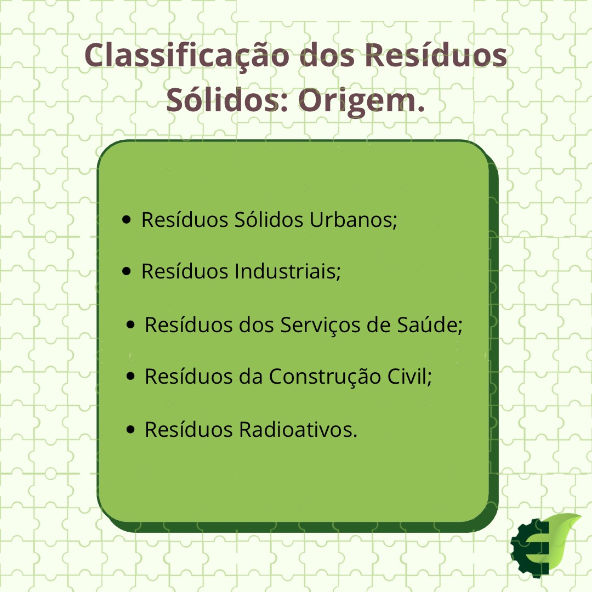
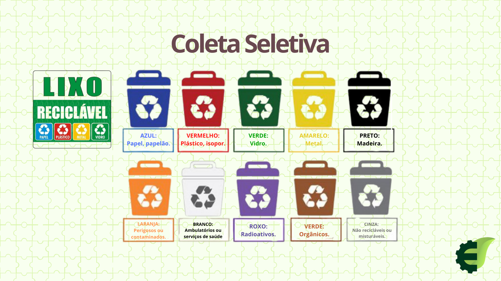

O que é Gestão de Resíduos Sólidos?
De acordo o artigo 3º, inciso X e XI, Gestão de Resíduos Sólidos consiste no conjunto de ações voltadas para a busca de soluções para os resíduos sólidos, considerando as dimensões política, econômica, ambiental, cultural e social, com controle social e sob a premissa do desenvolvimento sustentável. A NBR 10004:2004 Resíduos no estado sólido e semissólido são aqueles que resultam de atividades da comunidade de origem industrial, doméstica, hospitalar, comercial, agrícola de serviços e de varrição.
Classificação dos Resíduos Sólidos quanto a sua origem e periculosidade
CLASSIFICAÇÃO: No Brasil a quantidade de resíduos sólidos urbanos destinados inadequadamente cresceu 16% na última década (Agência Brasil,2020) , dentro desta porcentagem existem uma variedade dos tipos de resíduos sólidos, dentre estes, os principais são classificados em:

PERICULOSIDADE: Os resíduos também são classificados de acordo o nível de periculosidade que estes podem provocar no meio ambiente. Eles são classificados como:
- Resíduos de CLASSE I: Perigosos
- Resíduos de CLASSE II: Não Perigosos
Além disso, os resíduos de classe II são definidos entre classes A e B, no qual:
- CLASSE A: Não Inertes
- CLASSE B: Inertes.
*A esquematização sobre isso pode ser acompanhada, por meio do mapa mental fornecido no site.*
Educação Ambiental: Gestão de Resíduos Sólidos
A Lei nº 9795/1999, Artigo 1º da Política Nacional de Educação Ambiental define a Educação Ambiental como "processos por meio dos quais o indivíduo e a coletividade constroem valores sociais, conhecimentos, habilidades, atitudes e competências voltadas para a conservação do meio ambiente, bem de uso comum do povo, essencial à sadia qualidade de vida e sua sustentabilidade." Sendo assim, o seu principal objetivo consiste em desenvolver o senso critico de responsabilidade ambiental por meio de valores éticos e sociais afim de auxiliar na tomada das decisões de maneira responsável de forma que o consumo humano não danifique o meio ambiente no qual vivemos. VANTAGENS: A Educação Ambiental pode ser instaurada em diferentes setores, como no âmbito escolar, em um comércio, nas cidades, moradias e em empresa. As vantagens que uma empresa possui ao investir na educação ambiental no seu negócio são diversas, dentre elas:
- Sensibilização ambiental;
- Destaque no mercado e vantagem com a concorrência;
- Diminuição de custo;
- Expansão de conhecimento.
Educação Ambiental na Prática
Uma forma de aderir a educação ambiental de maneira prática é por intermédio da coleta seletiva ou trabalhar com a aplicação dos 4 R'S da sustentabilidade. Afinal, como seria feito?
COLETA SELETIVA: É um dos instrumentos que podem ser utilizados como forma de acondicionar corretamente os Resíduos Sólidos gerados. Sua função é realizar a coleta dos resíduos previamente segregados conforme sua constituição ou composição, após isso, disponibilizar adequadamente os resíduos sólidos reutilizáveis e recicláveis para coleta ou devolução. Os principais tipos de coleta são:

OS 4 R'S DA SUSTENTABILIDADE: Outro método que faz uso da educação ambiental, são os 4 R'S. Esta estratégia visa minimizar o desperdício de materiais e produtos, além de poupar a natureza do uso exacerbado dos seus recursos limitados, essa ideia auxilia na redução de gastos financeiros e desenvolve a sensibilização ambiental. Eles são divididos em:

Mapa Mental